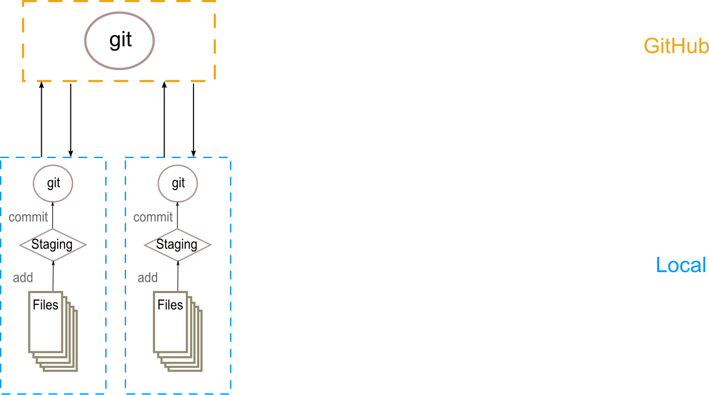

A brief introduction to git and GitHub
Peter Humburg
24th November 2014
Overview
Git. The what and why.
Why use version control?
- Keeping track of changes
- Collaborate
- Maintain multiple versions
- Understand what happened
- Recover previous versions
- Backup source code
Using git

Using git
Using git

Using git

Using branches

- Can maintain several parallel versions.
- Use one branch for the latest stable version (master).
- Other branches for development.
- Changes to one branch will not interfere with use of other branches.
- Different workflows use branches in variety of ways.
What is GitHub?
Cloud storage
GitHub hosts git repositories.  Great backup for source code and other documents.
Web interface

- Manage repositories
- create/delete repositories and files
- edit files
- Browse commit history
- examine changes to files
- even images!
- Host documentation
- Wiki
- Static web page
- Issue tracker
Using GitHub
Create a repository

Create a new branch

Clone it
Two ways to access repositories on GitHub
HTTPS
git clone https://github.com/jknightlab/git-tutorial.gitSSH
git clone git@github.com:jknightlab/git-tutorial.git
Clone it
Two ways to access repositories on GitHub
HTTPS
git clone https://github.com/jknightlab/git-tutorial.git- No additional setup required
- Works from behind firewalls/proxies
- Requires user name and password for every
push,pullorfetch Git can do this for you
git config --global credential.helper 'cache --timeout=36000'
SSH
git clone git@github.com:jknightlab/git-tutorial.git
Clone it
Two ways to access repositories on GitHub
HTTPS
git clone https://github.com/jknightlab/git-tutorial.gitSSH
git clone git@github.com:jknightlab/git-tutorial.git- Need to generate and deploy SSH keys
- If private keys are password protected this has to be entered for each
push,pullorfetchcommand. - Can use
ssh-agentto take care of passwords.
Configure the repository
Tell git your name and email address. These will be used to attribute commits.
git config --global user.name <your name>
git config --global user.email <your email>If you are working on Windows also set this option
git config --global core.autocrlf trueSwitch branches
Currently we are using the master branch.
git statusList all existing branches
git branch -aSwitch to data-collection branch
git checkout data-collectionAdd a file
Create a new file (using your favourite text editor).
We now have an untracked file in our repository.
git statusAdd the file to the staging area
git add <your file>Commit and push
Time to commit all staged changes (don't forget to add a descriptive commit message)
git commit -m "Added file with very important information"Now we can push the new files to GitHub
git pushPull
Before doing anything else, make sure your local repository is up to date.
git pullPlaying with the data
Create a new branch (off the data-collection branch).
git checkout -b analysisCombine all the data (in R) ...
files <- dir(pattern=".txt")
data <- lapply(files, read.table)
data <- do.call(rbind, data)
names(data) <- "value"
names <- lapply(files, strsplit, ".", fixed=TRUE)
data$name <- sapply(names, sapply, "[[", 1)
write.table(data, file="combined.tab", row.names=FALSE)and add it to the repository.
git add combined.tab
git rm *.txt
git commit -m "Combined data into single file"Pushing the new branch to GitHub
When pushing a new branch for the first time we need to tell git where it should go.
git push --set-upstream origin analysisMore fun with data
Let's plot the data
library(ggplot2)
data <- read.table("combined.tab", header=TRUE)
data$rank <- order(data$value)
ggplot(data, aes(y=value, x=rank)) + geom_point() + theme_bw()
ggsave("figure/combined.png")and add the plot to the repository.
git add figure/combined.png
git commit -m "added plot of data"
git pushThe fun continues
Maybe that plot could be improved?
ggplot(data, aes(y=value, x=rank)) + geom_point() +
geom_text(aes(label=name), hjust=0, vjust=0) +
theme_bw()git add figure/combined.png
git commit -m "Added labels to data points."
git pushMerging on GitHub
Can merge branches on GitHub (if there are no conflicts).
- Create pull request for branch that should be merged
- Approve pull request and merge
- Delete merged branch
Clean-up
Branches that have been deleted on GitHub still exist in the local repository. Best to clean them up.
git pull
git branch --merged | grep -v "\*" | grep -v master | xargs -n 1 git branch -d
git pull --pruneLocal merge
Can always merge locally and then push to GitHub.
Here we merge data-collection into master
git checkout master
git merge data-collectionand then delete the local branch and push everything to GitHub
git branch -d data-collection
git pushFinally, delete the remote branch as well.
git push origin --delete data-collectionHistory and diffs

GitHub provides many ways to explore the history of a project.
- Network graph
- View all changes made by a commit
- View history of individual files
- See who made changes to a file
Summary
Common git commands
git clone- Create a copy of a remote repository.
git add- Stage new or changed files for the next commit.
git commit- Commit a change set to the local repository.
git push- Push committed changes to the remote repository.
git pull- Get latest version of files from remote repository and merge them with the local copies.
git status- Show status of files in working directory relative to index.
Managing branches
git branch- Create a new branch or list existing branches. Can also delete local or remote branches (may want to merge into another branch first).
git checkout- Switch to a different branch.
git merge- Merge two branches.
More git commands
git rm- Delete files from index and working directory.
git reset- Reset index and working directory to a previous commit.
git stash- Temporarily undo changes that you don't want to commit immediately.
Useful resources
Git and GitHub tutorials
- GitHub for Beginners part 1 and part 2
- Git: Your new best friend
- Git for Scientists
- Interactive online tutorial
- GitHub bootcamp
- Tutorials from Atlassian
Other Git resources
- Git documentation including installation instructions
- GitHub GUI for Windows and Mac
- GitHub workflow explained.
- Comparison of git workflows.
- Detailed description of git configuration.
Appendix
Setting up ssh agent
If working on a Linux machine that isn't automatically starting an ssh-agent instance this can be achieved by adding the following code to .profile
SSH_ENV="$HOME/.ssh/environment"
function start_agent {
echo "Initialising new SSH agent..."
/usr/bin/ssh-agent -s | sed 's/^echo/#echo/' > "${SSH_ENV}"
echo succeeded
chmod 600 "${SSH_ENV}"
. "${SSH_ENV}" > /dev/null
/usr/bin/ssh-add;
}
# Source SSH settings, if applicable
if [ -f "${SSH_ENV}" ]; then
. "${SSH_ENV}" > /dev/null
ps -ef | grep ${SSH_AGENT_PID} | grep "$(whoami).*ssh-agent\s" > /dev/null || {
start_agent;
}
else
start_agent;
fiThe ssh passphrase then only needs to be entered once when the ssh agent is started.
Social network